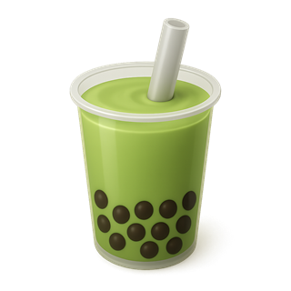
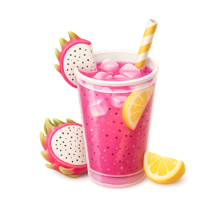
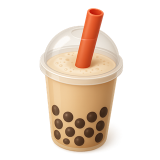

Un envase para todo tu día
El envase acompaña tu rutina sin complicarla. Toca un lugar para ver cómo se usa ahí.


En la universidad
Entre clases, en la biblioteca o en la cafetería. Pides tu bebida en tu propio envase y la llevas al salón sin derramarla.
Así no dejas vasos, tapas ni sorbetes en el campus.
En el instituto
Va en la mochila junto a tus cuadernos. Lo traes en el recreo o a la salida y te sirven en tu propio envase.
Te acompaña toda la jornada de clases sin generar basura.
En el trabajo
Lo tienes en tu escritorio todo el día. Lo llenas las veces que quieras sin usar un solo vaso descartable.
Como es de acero inoxidable, resiste el uso diario y se lava fácil al terminar.
En el hogar
No hace falta comprar café para usarlo. Lo recargas en casa con lo que tú prepares y sales con él.
Sirve para el desayuno, para estudiar o para ver una película.
Donde vayas
De paseo, de viaje o haciendo deporte. Cierra con tapa y va contigo a cualquier lugar.
Así reduces el uso de descartables sin que sea algo complicado.
Para todas tus bebidas
No es solo para café. Sirve para bebidas calientes y frías, así un solo envase reemplaza muchos vasos descartables.
 Café
Café

Té matcha Jugos
Jugos

Frutas
Bubble tea Infusiones
Infusiones